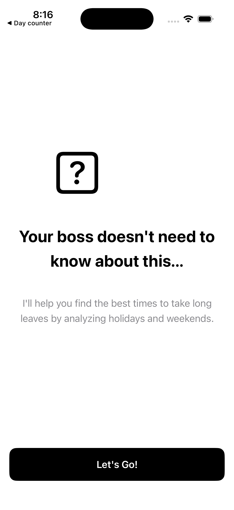
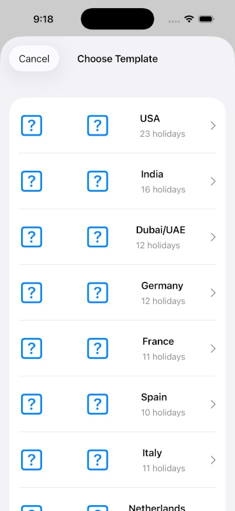

01 — Onboarding: "Your boss doesn't need to know about this..."

02 — Import: "How do you want to feed me your leave data?" (Template / Screenshot / CSV)

03 — Choose Template: Country holiday calendars (USA, India, UAE, etc.)

04 — Dashboard: Upcoming Leaves with calendar strips and optimization